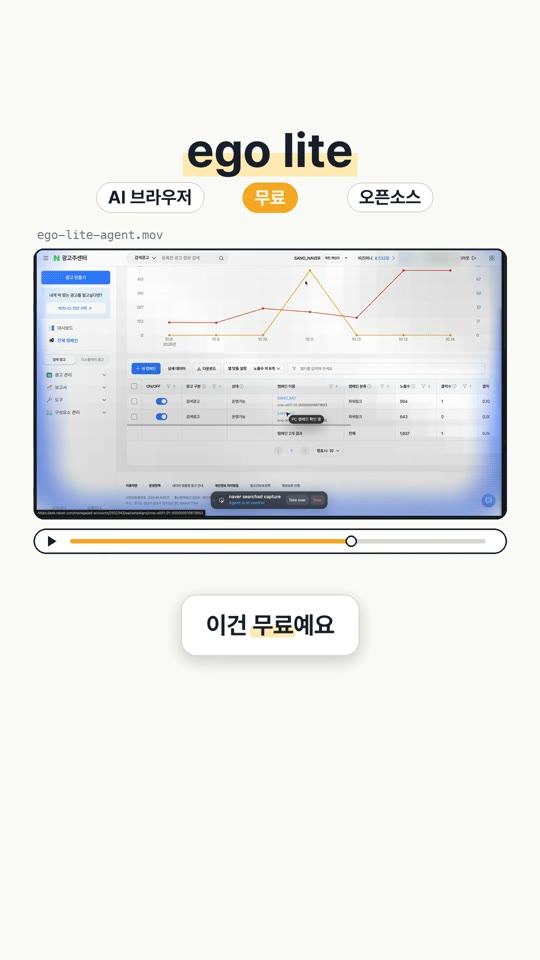
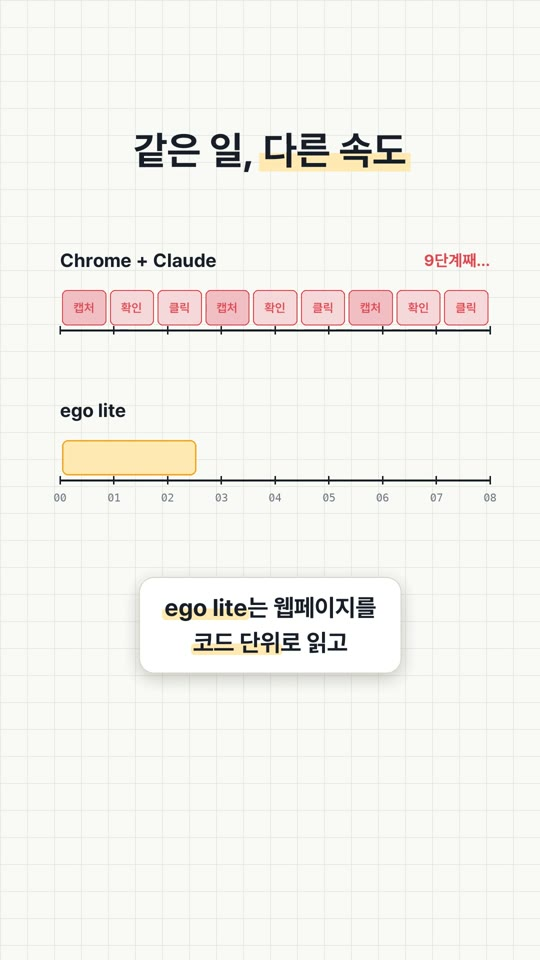
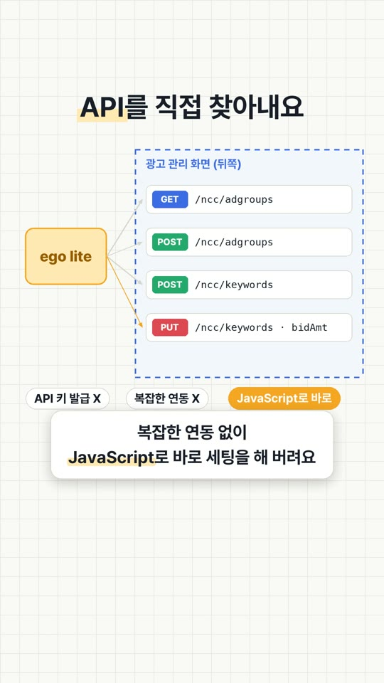
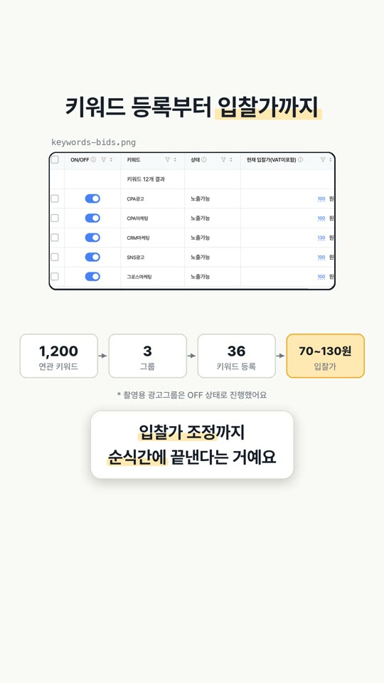

EP.01 · ego lite
AI가 쓰라고 만든
AI가 쓰라고 만든
무료 브라우저, ego lite
AI한테 크롬 조종을 맡겼다가 너무 느려서 포기하신 분, 이거 한번 써 보세요.
01ego lite가 뭐예요?
AI 에이전트가 쓰라고 만든 크로미움 브라우저예요. 사람이 평소처럼 쓰던 창을 AI한테 그대로 넘길 수 있어서, 내가 로그인해 둔 광고 관리자 · GA · 스프레드시트를 AI가 같은 창에서 이어서 다뤄요.
02왜 빨라요?
보통 클로드한테 크롬을 시키면 한 동작마다 이 왕복을 돌아요.
캡처 → 이미지 보고 판단 → 클릭 → 다시 캡처해서 확인
버튼 하나 누를 때마다 사진을 찍어서 읽는 셈이라 느리고, 토큰도 많이 들어요.
ego lite는 화면을 사진이 아니라 페이지 구조(코드)로 읽고, '입력 → 클릭 → 저장'처럼 이어지는 동작을 하나로 묶어서 한 번에 실행해요. 제작사가 공개한 벤치마크에선 다른 에이전트 브라우저보다 최대 3.45배 빨랐어요. 작업마다 차이는 있어요.
03마케터는 어디에 쓰면 좋을까
광고 세팅
캠페인 · 광고그룹 · 키워드 등록, 입찰가 변경
계정 점검
꺼진 광고, 예산 소진, 반려된 소재 훑어보기
데이터 수집
매체 리포트 내려받기, 경쟁사 랜딩 · 광고 라이브러리 정리
04제일 놀랐던 장면
네이버 검색광고에 키워드 등록을 시켰더니, AI가 관리 화면이 뒤에서 주고받는 요청(API)을 스스로 찾아냈어요. 그다음부터는 버튼을 하나하나 누르지 않고 그 요청으로 바로 처리하더라고요.
1,200연관 키워드
3광고그룹
36키워드 등록
70~130원입찰가
영상 속 테스트예요. 키워드가 늘어나도 같은 방식으로 처리해요. 촬영용 광고그룹은 꺼 둔 상태에서 진행했어요.
05써 보기 전에 꼭
- 로그인된 내 계정에서 실제로 움직여요. 등록 · 입찰 변경 전 최종 확인은 사람이 하세요.
- 관리 화면의 내부 요청은 공식 API가 아니에요. 대량 작업 전에는 매체 운영 정책을 한 번 확인해 두세요.
06영상 속 장면




설치하고 클로드에 연결하는 법은 EP.02에.
대행사에서 AI 교육하는 현직 마케터가 실무에서 바로 쓰는 것만 골라 올려요.
인스타에서 팔로우